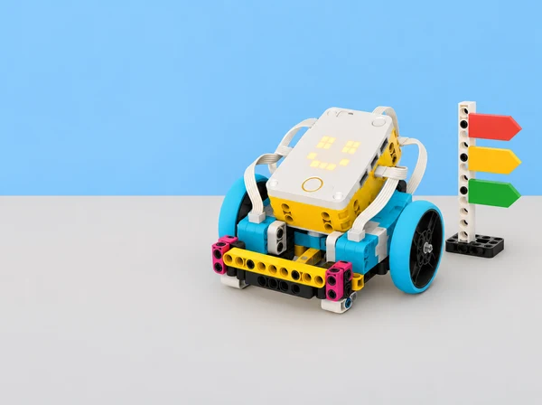

La biblioteca del centre prepara una setmana de portes obertes i vol provar un petit punt d’informació que anuncie, amb un patró de llum i un senyal sonor opcional, si una taula està disponible, ocupada o necessita ajuda. L’equip no registra persones ni dades reals: treballa amb targetes de situació creades a classe i un hub SPIKE Prime. L’encàrrec és dissenyar un codi de senyals fàcil d’aprendre, escriure’l en Python, comprovar-lo amb diferents persones i condicions, i explicar què pot i què no pot comunicar el prototip.
Aquesta situació adapta les set lliçons de la unitat 1 Hardware and Software de LEGO Education Introduction to Python Programming · Course 1: Importing Libraries, Communicating with Light, Pair Programming, Communicating with Sounds, Digital Sign, Ideas to Support Your Design i Career Connections. Manté el fil d’introducció a les biblioteques, ús de matriu lluminosa i so del hub, treball en parelles, depuració elemental, missatge multimodal, revisió amb feedback i connexió amb professions. El context i la producció són propis, i la resposta sonora sempre és opcional.
Maquinari: parts físiques que capten o produeixen accions. Programari: instruccions i dades que utilitza el dispositiu. Biblioteca: conjunt de codi reutilitzable. Importar: incorporar una biblioteca al programa. Matriu: conjunt de píxels lluminosos del hub. Depurar: investigar una diferència entre el resultat esperat i l’observat.
# Fragment conceptual de Python; adapteu la biblioteca a l'app SPIKE disponible.
# primer es defineix el senyal; després es prova una instrucció cada vegada
missatge = "AJUDA"
print(missatge)El fragment és Python general i no controla maquinari. Els noms d’importació i les funcions per a matriu, so i botons varien entre versions de SPIKE; el professorat comprova l’exemple corresponent en la Knowledge Base de l’app local abans d’executar-lo.
Un set SPIKE Prime per parella, hub carregat, dispositiu amb l’app SPIKE i editor Python disponible, diari d’enginyeria, targetes mate amb símbols grans i paraules curtes, cartó per a una base de mostrador, retoladors, cinta de paper, temporitzador i versions impreses dels patrons. Un robot mòbil no és imprescindible: el hub es pot usar fixat en un suport estable, que és més pertinent per a un senyal. No calen materials externs de LEGO ni s’atribueix cap capacitat de reconeixement automàtic a la maqueta.
Abans de la primera sessió, confirmeu connexió al hub, idioma/layout de l’editor, API Python present i accés a consola. Proveu una expressió innocent abans de connectar motors; en aquesta situació no necessitem cap motor. Consulteu els noms oficials de les funcions de matriu i so de la vostra versió. Prepareu un exemple que funcione i còpies amb un error intencional de codi; eviteu errors que puguen activar un actuador. Definiu un nivell baix de volum i una alternativa sense so.
Formeu parelles amb rols que canvien a cada sessió: pilota (escriu o manipula el dispositiu) i navegant (llegeix el criteri, prediu i registra). Reserveu torns perquè ambdues persones escriguen codi i expliquen decisions. Abans d’usar el senyal amb persones, expliqueu que és un prototip d’aula, no un sistema operatiu del centre ni un canal d’emergència.
Activació (7 min): compareu una recepta amb un programa: ingredients i utensilis són recursos, mentre que instruccions en descriuen l’ús. Traslladeu l’analogia sense dir que una biblioteca és un dispositiu: és codi reutilitzable. Exploració guiada (10 min): identifiqueu les parts físiques disponibles en el hub SPIKE i dibuixeu una taula amb “component”, “què pot fer” i “què no sabem encara”. Obriu un exemple Python del projecte local, llegiu-ne les importacions i localitzeu una funció que s’hi utilitza; si el fitxer no és llegible en l’editor, el docent projecta un exemple mínim verificat. Pràctica (20 min): importeu la biblioteca exacta de la Knowledge Base de la versió instal·lada, executeu un programa mínim que no moga cap motor, observeu el missatge de consola i proveu què passa en una còpia si s’omet l’import o es canvia el nom. No executeu un error deliberat sobre un muntatge en moviment. Registre i eixida (8 min): completeu un esquema maquinari → instrucció → resposta i expliqueu per què el programa necessita importar funcions que no són part del nucli bàsic. Anoteu versió de l’app i API usada, perquè és una condició de reproduïbilitat.
Pregunta d’investigació: quins patrons de llum es poden distingir amb rapidesa sense dependre del color? Modelatge (8 min): el docent mostra tres missatges temporals en la matriu (per exemple, disponible, ocupat, demanar suport), descrits també per forma o ritme. L’alumnat dibuixa el patró abans de veure’l de nou i anota interpretacions alternatives. Programació en parella (22 min): partiu d’un exemple funcional de la biblioteca local; canvieu primer només una representació gràfica, després la pausa i després l’ordre. La persona navegant llig l’objectiu en veu alta, prediu l’eixida i registra diferències; la pilota escriu. Intercanvieu els rols a mitja tasca. Afegiu comentaris que expliquen el propòsit del senyal, no cada caràcter. Prova amb usuaris (10 min): mostreu els senyals a dues parelles sense donar la clau; feu que indiquen què creuen que significa cadascun. Recolliu només respostes anònimes del grup, sense atribuir-les a persones. Tancament (5 min): trieu una ambigüitat i escriviu una modificació mesurable; no conclogueu que el codi és accessible només perquè un grup l’ha entés.
Demostració (5 min): modeleu el protocol: llegir enunciant, predir abans d’executar, escriure canvis menuts, provar, explicar i intercanviar. Repte (25 min): cada parella rep un programa curt de missatge lluminós amb una errada elemental controlada i una tasca de modificació. El navegant no dicta línia per línia: pregunta “quina eixida esperem?” i assenyala la part pertinent. La pilota verbalitza abans de canviar; després de cada prova anoten resultat i causa possible. Canvieu rols, editeu un segon missatge i compareu si el programa continua tenint les mateixes propietats. Debat d’autoria (8 min): distingiu prendre una idea, reutilitzar un exemple i presentar codi d’una altra persona com si fora propi. Afegiu un comentari que cite l’exemple consultat quan siga aplicable. Reflexió (7 min): cada membre anota una contribució pròpia i una pregunta tècnica; comproveu que ambdues persones han manipulat l’editor, no sols observat.
Escolta crítica (7 min): proveu sons breus a volum baix i compareu to, nombre d’impulsos i pausa. No useu alarmes estridents ni sons sobtats. Exploració Python (20 min): useu una funció oficial de so validada per al hub per crear un patró d’un, dos o tres senyals; anoteu què fa cada argument segons la documentació i ajusteu una sola propietat per prova. Una parella treballa primer amb patrons dibuixats si el so no està disponible. Regla de comunicació (10 min): associeu cada so amb un patró visual i un text curt equivalent; feu una prova amb el so desactivat i expliqueu si encara es pot identificar l’estat. Depuració (5 min): reviseu un error preparat de crida o seqüència en paper, localitzeu-lo i corregiu-ne només una causa. Eixida (3 min): redacteu quan el senyal sonor no seria adequat i com conservar el mateix accés a la informació.
Definir el problema (10 min): cada equip tria tres estats ficticis del mostrador. Per a cadascun especifica destinatari, significat, patró visual, patró sonor opcional, durada i què ha de fer una persona usuària. Eviteu “lliure/ocupat” si no hi ha un sensor que ho comprove: l’operador selecciona manualment la targeta i el model només mostra eixa selecció. Storyboard i proves de comprensió (12 min): dibuixeu la seqüència d’entrada, missatge i retorn a estat inicial; una altra parella intenta interpretar icones i ritmes. Reviseu el vocabulari ambigu abans de programar. Construcció i codi (30 min): creeu una maqueta estable de taula amb hub visible, targetes grans i una interfície d’entrada viable en la versió local (botons del hub o selecció al programa). Dividiu el programa en passos que es puguen llegir: seleccionar estat, mostrar senyal, esperar o acabar. Afegiu llum i, si s’escau, so complementari. Manteniu els noms i ordres documentats per l’app instal·lada i proveu cada funció per separat. Ronda de casos (20 min): proveu els tres estats previstos, una entrada desconeguda i una interrupció/reset. Registreu entrada, senyal observat, interpretació de companys i canvi fet; comproveu si el programa queda en un estat comprensible en reiniciar. Revisió creuada (10 min): altres alumnes reben el cartell sense llegenda i expliquen la interpretació; cap equip recull noms ni identifica respostes individuals. Comunicació (8 min): presenteu una targeta d’ús amb clau dels senyals, instrucció d’aturada i límit principal: el prototip no detecta disponibilitat real, no substitueix avisos oficials i no s’ha d’instal·lar al centre com a equip de seguretat.
Preparació (8 min): cada parella documenta objectiu, versió inicial, casos provats i una incertesa. Intercanvi (12 min): l’equip revisor prova els senyals en silenci primer i amb so opcional després, fent servir una pauta d’observació: “he vist/escoltat…”, “he interpretat…”, “una prova que falta…”. Es comenta el disseny i el codi, no l’habilitat de qui el va escriure. Decisió (5 min): els autors classifiquen cada suggeriment com adoptar, aparcar o rebutjar amb una raó. Iteració (15 min): canvieu una propietat; repetiu un cas que havia generat confusió i un senyal que ja es comprenia per comprovar que no s’ha degradat. Deseu un registre abans/després. Autoavaluació (5 min): expliqueu com ha canviat la coordinació pilot/navegant i quina instrucció encara voldríeu consultar a la documentació.
Mapa de tasques (10 min): mireu el treball fet i assigneu-ne parts a funcions professionals —desenvolupar software, dissenyar una interacció, provar accessibilitat, documentar, reparar dispositius— sense afirmar que una persona real fa una única funció. Investigació guiada (15 min): per equips, redacteu tres preguntes sobre habilitats, col·laboració i decisions d’ètica/accés. Useu fonts professionals o una entrevista autoritzada si el centre en disposa; no inventeu respostes ni exigiu dades personals sobre itineraris familiars. Producte (15 min): creeu una fitxa de professió connectada amb una tasca del projecte, una competència observable i una pregunta oberta. Galeria i síntesi (5–20 min): presenteu prototips i professions en una mostra de classe, amb opció d’exposar text, diagrama o explicació oral. Tanqueu relacionant un canvi de disseny amb una necessitat d’usuari i una responsabilitat de qui construeix tecnologia.
El portafolis inclou diagrama maquinari/programari, nota de versions i imports, traça d’un programa inicial, pseudocodi, storyboard, taula d’estats i senyals, programa Python comentat, dues proves de depuració, observacions anònimes de comprensió, iteració justificada, pauta de parelles i fitxa de connexió professional. El producte és un prototip de senyal digital de taula més una targeta d’ús que explique la selecció d’estat, alternatives de percepció, procediment d’aturada i limitacions.
Avalueu amb quatre criteris: comprensió del sistema (diferencia hardware/software i identifica per què importa la biblioteca); programació (construeix una seqüència de llum/so coherent i localitza una errada elemental); disseny de comunicació (manté alternatives i revisa interpretacions a partir de proves); i col·laboració/reflexió (alterna rols, documenta atribució, usa feedback i connecta tasques amb professions). Nivells suggerits: amb modelatge, amb suport, autònom, i transferència justificada. No s’avalua que el robot “funcione” a seques: importa poder explicar la relació entre instrucció, component, resultat i prova.
Presenteu la informació amb text, símbol, llum i opció sonora suau; mai feu que el color siga l’única pista. Oferiu patrons imprimibles, lectura de codi en parella, text ampliat, pauses, rols alternatius i prova sense sons. Eviteu parpellejos ràpids o seqüències que puguen causar molèstia; deixeu que qualsevol alumne observe o trie una altra manera de participar. No capteu dades personals, imatges, converses ni presència de persones. Manteniu el model en una taula estable; els motors no són necessaris. El senyal és una simulació didàctica, no alarma, servei de biblioteca real ni instrucció d’evacuació.
Adapta les set lliçons de la unitat 1 Hardware and Software de LEGO Education Introduction to Python Programming · Course 1: Importing Libraries, Communicating with Light, Pair Programming, Communicating with Sounds, Digital Sign, Ideas to Support Your Design i Career Connections. Les durades de referència són 45, 45, 45, 45, 45–90, 30–45 i 60–90 minuts respectivament. La guia consultada treballa amb SPIKE Prime, Python, journals i parelles; aquesta adaptació conserva eixos objectius, canvia el context per un senyal escolar simulat i produeix procediments, exemples, instruments i imatge propis. No es reprodueixen materials d’alumnat ni codi complet. Les APIs d’SPIKE depenen de la versió i cal validar-les localment.